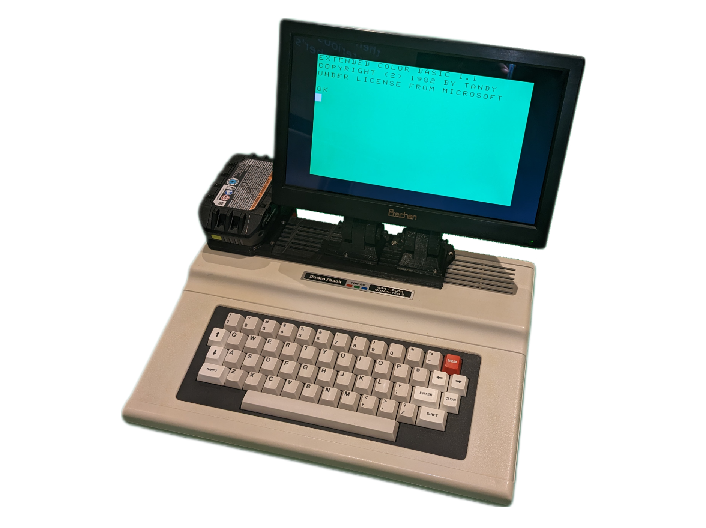

Flagship Innovation
Porta Mini CM-8 Monitor
A fully portable, wireless monitor replicating the iconic Tandy/RadioShack CM-8 styling with modern high-definition digital display hardware and battery compatibility.
PortaCoCo bridges iconic 1980s computing platforms with contemporary battery systems, wireless video, and modern display tech. Engineered with a strict Zero Case Modification philosophy, our innovations allow historic machines to go anywhere without altering original vintage hardware.
Due to evolving cross-border tariff conditions and regulatory duty adjustments between Canada and the United States, commercial direct-to-consumer storefront sales are currently on pause.
To shield customers from prohibitive import duties and sudden customs surcharges, retail cart transactions have been suspended while we restructure cross-border logistics.
We are actively vetting localized domestic manufacturing partners, contract assemblers, and reliable component sourcing channels across North America.
Sales, pre-orders, and distribution will resume once an optimized, tariff-compliant production and fulfillment pipeline is certified.
Streamlined retro-mobility solutions engineered for clean integration, modern power standards, and effortless portability.
A fully portable, wireless monitor replicating the iconic Tandy/RadioShack CM-8 styling with modern high-definition digital display hardware and battery compatibility.

Replaces clumsy monitor and power cords with wireless HDMI transmission and 7+ hours of battery autonomy, designed to pair seamlessly with the Mini CM-8.

Converts the compact Tandy MC-10 microcomputer into a go-anywhere mobile setup utilizing non-invasive composite video routing and unified battery power.

High-output mobility conversions powered by standardized Ryobi ONE+ battery systems, featuring 6309 CPU support, internal DriveWire, and integrated HD display.
Vintage computing hardware is finite. At PortaCoCo, we believe that bringing historic technology into the modern world should never come at the cost of destroying original enclosures or irreplaceable motherboards.

Founder, Product Development & Hardware Lead
PortaCoCo was founded by Mark Pacan as a dedicated hardware innovation venture focused on retro-tech mobility and modular electronics engineering. Bringing together deep corporate experience across Product Development, IT Infrastructure, Consumer Insight, and Operational Strategy, Mark has steered PortaCoCo from initial CAD models and breadboard prototypes to fully functioning hardware shown at national computing expos.
Under his direction, PortaCoCo pioneered the Zero Case Modification standard—proving that vintage industrial design and contemporary portable technology can merge seamlessly without compromising collector hardware.
For technical evaluations, manufacturing inquiries, partnership opportunities, or media requests, please reach out via our direct channel.